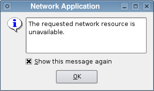

QErrorMessage Class
The QErrorMessage class provides an error message display dialog. More...
| Header: | #include <QErrorMessage> |
| CMake: | find_package(Qt6 REQUIRED COMPONENTS Widgets) target_link_libraries(mytarget PRIVATE Qt6::Widgets) |
| qmake: | QT += widgets |
| Inherits: | QDialog |
Public Functions
| QErrorMessage(QWidget *parent = nullptr) | |
| virtual | ~QErrorMessage() |
Public Slots
| void | showMessage(const QString &message) |
| void | showMessage(const QString &message, const QString &type) |
Static Public Members
| QErrorMessage * | qtHandler() |
Reimplemented Protected Functions
| virtual void | changeEvent(QEvent *e) override |
| virtual void | done(int a) override |
Detailed Description
An error message widget consists of a text label and a checkbox. The checkbox lets the user control whether the same error message will be displayed again in the future, typically displaying the text, "Show this message again" translated into the appropriate local language.
For production applications, the class can be used to display messages which the user only needs to see once. To use QErrorMessage like this, you create the dialog in the usual way, and show it by calling the showMessage() slot or connecting signals to it.
The static qtHandler() function installs a message handler using qInstallMessageHandler() and creates a QErrorMessage that displays qDebug(), qWarning() and qFatal() messages. This is most useful in environments where no console is available to display warnings and error messages.
In both cases QErrorMessage will queue pending messages and display them in order, with each new message being shown as soon as the user has accepted the previous message. Once the user has specified that a message is not to be shown again it is automatically skipped, and the dialog will show the next appropriate message in the queue.
The Standard Dialogs example shows how to use QErrorMessage as well as other built-in Qt dialogs.

See also QMessageBox, QStatusBar::showMessage(), and Standard Dialogs Example.
Member Function Documentation
[explicit] QErrorMessage::QErrorMessage(QWidget *parent = nullptr)
Constructs and installs an error handler window with the given parent.
The default window modality of the dialog depends on the platform. The window modality can be overridden via setWindowModality() before calling showMessage().
[virtual noexcept] QErrorMessage::~QErrorMessage()
Destroys the error message dialog.
[override virtual protected] void QErrorMessage::changeEvent(QEvent *e)
Reimplements: QWidget::changeEvent(QEvent *event).
[override virtual protected] void QErrorMessage::done(int a)
Reimplements: QDialog::done(int r).
[static] QErrorMessage *QErrorMessage::qtHandler()
Returns a pointer to a QErrorMessage object that outputs the default Qt messages. This function creates such an object, if there isn't one already.
The object will only output log messages of QLoggingCategory::defaultCategory().
The object will forward all messages to the original message handler.
See also qInstallMessageHandler.
[slot] void QErrorMessage::showMessage(const QString &message)
Shows the given message, message, and returns immediately. If the user has requested for the message not to be shown again, this function does nothing.
Normally, the message is displayed immediately. However, if there are pending messages, it will be queued to be displayed later.
[slot] void QErrorMessage::showMessage(const QString &message, const QString &type)
This is an overloaded function.
Shows the given message, message, and returns immediately. If the user has requested for messages of type, type, not to be shown again, this function does nothing.
Normally, the message is displayed immediately. However, if there are pending messages, it will be queued to be displayed later.
See also showMessage().